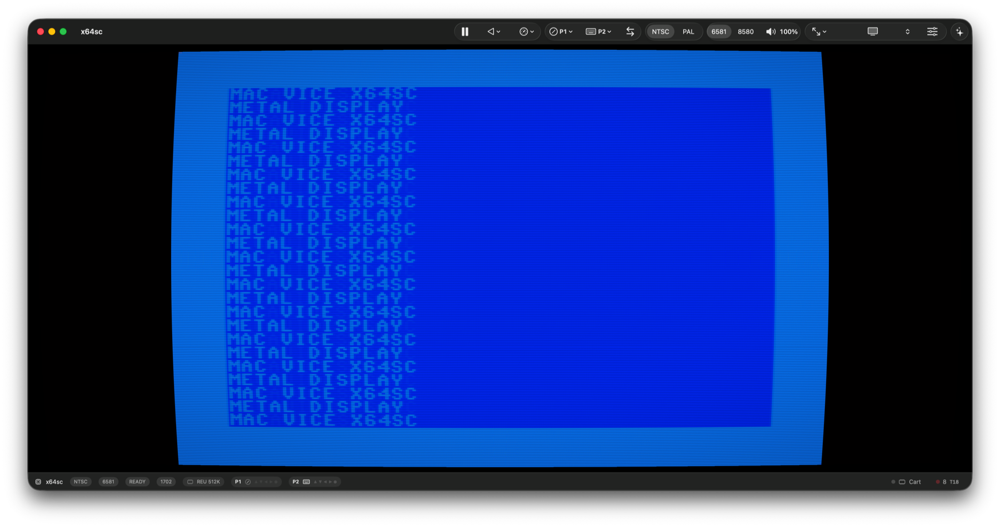

Native Metal Display
Low-latency frame delivery with display profiles for clean LCD output, CRT-style displays, PVM, RF, and phosphor looks.
Native Apple Silicon builds of VICE
A native Mac home for the VICE engine: Metal display output, Mac menus, visual settings, signed DMGs, and one focused app for each machine.
Latest notarized release is published on GitHub.

Mac-first without losing VICE
Low-latency frame delivery with display profiles for clean LCD output, CRT-style displays, PVM, RF, and phosphor looks.
Separate apps for x64sc, x128, xvic, PET, Plus/4, C16, C232, and V364, each exposing settings that make sense for that machine.
Open disks, tapes, cartridges, snapshots, and PRG files through normal macOS panels, document handling, and drag-and-drop.
Inspect VICE keymaps as a keyboard instead of editing config files, then remap keys through a Mac-native editor.
Disk image management, runtime controls, machine model settings, and monitor work are brought into focused native windows.
Release packages are CI-built, checksummed, signed, notarized, stapled, and wired for Sparkle updates through GitHub Releases.
Screenshots
Real x64sc output with native toolbar controls and the tuned CRT display chain active.

Profiles, scanlines, phosphor mask, curve, halation, persistence, saturation, and warmth.

C128DCR model selection, video standard, RAM expansion, and ROM slots in one native pane.

Memory expansion, video standard, controls, and cartridge state stay visible without leaving the machine.

The PET family gets its own window, status bar, model state, and monochrome display profile.

Separate Plus/4-family builds keep TED video and control-port behavior out of generic emulator clutter.
Disk image manager

Open D64-family images, inspect files, export PRGs, copy between panes, and review whether a disk can be rebuilt with optimized sector placement.

Pick a supported format, disk name, and ID from a native sheet.
Included apps
Latest release
The release package contains the machine apps. Drag the ones you use into Applications, then stay current with Sparkle updates.